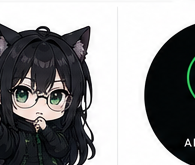
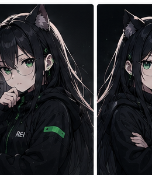
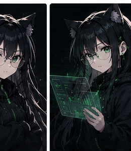

REI ANALYTICS 𝕏 フォロー
@Rei_value — 個人開発の観測ログとAI活用記録を発信。
予測示唆ではなく、観測の事実だけを淡々と。
Observation Log
運営する個人開発プロジェクトと発信活動の現在の数字。 評価ではなく観測の事実として記録します。
週次の X投稿KPI（インプレ・保存率・note遷移CTR）は前週比%のみ公開。 絶対数の生公開は数字に振り回されない設計のため避けています。
Projects
観測軸の発信を支える個人開発スタック。 実装・運用・観測の全部を1人で回しています。
ポケモンカードの相場を6サイトから収集・観測。異常検知の精度を7月再診断で判定するため、 予測機能は意図的に凍結中。Railway本番稼働。
ポケカ抽選販売の情報集約。3層防御の認証設計と冪等な自動シード機構を実装。 「自分しか使わないツールもUIを作る」設計思想の実例。
部門別CLAUDE.mdで動くAI経営シミュレータ。CEOが部門意見を統合して 意思決定する設計＝Chain of Thoughtの並列実装そのもの。
X投稿のインプレ単価・保存率・note遷移CTRを週次でDBに記録。 観測日誌シリーズとして毎週日曜に前週比%のみ公開予定。
Notes
記録軸で書いたnote記事と、観測フレームの実装ログ。

About
個人開発・観測・記録の3軸で発信する観測者。 「予測で稼ぐ」ではなく「観測を積み上げる」運営をしています。
「当たる/外れる/的中率」の評価軸を捨て、「観測した・記録として残す」軸で発信。 数字は事実として淡々と扱います。
ポケカ相場・株式・暗号資産いずれも売買推奨は行いません。 観測の公開はしますが、判断は読み手に委ねます。
予測の精度判定（precision@k≥0.5・FPR≤0.2）は事前宣言した固定基準で機械判定。 7月再診断まで収益化は凍結します。
cron稼働数・テスト本数・観測N・前週比KPI まで公開。 「数字を出す勇気のある運営」をブランドの中核に置いています。